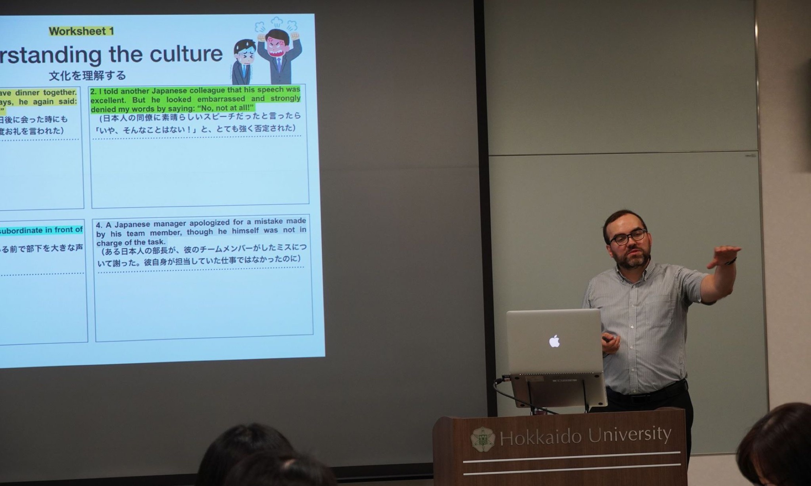

Intercultural Communication in the Classroom
For instructors working with multilingual groups. Participants redesign one classroom moment to support clearer dialogue, participation, and reflection across cultural difference.
Workshop Offer
I draw on work at Hokkaido University, APU, and the Ritsumeikan Space Management Program. Each session starts with a problem participants recognise and ends with a class plan, facilitation choice, or next step they can use.


A working trace
This original APU Pre-FD poster represents the kind of practical learning design behind the formats on this page: a real audience, a clear sequence, and a result participants can carry back into their teaching.
Open the original posterŚlad pracy
Ten oryginalny plakat serii Pre-FD na APU pokazuje rodzaj praktycznego projektowania, który stoi za formatami z tej strony: prawdziwi odbiorcy, jasna sekwencja pracy i rezultat, który uczestnicy mogą zabrać do własnej dydaktyki.
Otwórz oryginalny plakatEngagement Formats
| Format | Works best when | Participants leave with | Typical setting |
|---|---|---|---|
| 90 minutes | The issue can be defined in one sentence. | An action plan and one tested tool. | Faculty meeting, CTL programme, conference. |
| Half day | A real lesson, activity, or assessment needs redesign. | A revised teaching component and peer feedback. | Department or programme workshop. |
| Two-part series | People need to try an idea, return, and improve it. | A draft, rehearsal, feedback, and revised version. | Pre-FD or staff-development cohort. |
| Custom sequence | A team needs a shared practice, not a single event. | A common framework, templates, and evidence plan. | Programme-level or cross-unit partnership. |
Areas of Expertise
What Participants Produce
Facilitation Approach
I learned this approach while working with real constraints: multilingual groups, nervous first-time teachers, faculty redesigning courses, and students planning international space projects. The subject changes; the need for clear structure and room to think does not.
I combine short input with templates, discussion, rehearsal, and feedback. In the Ritsumeikan Space Management Program, for example, students used communication styles, leadership observation, and presentation practice to work across institutional and cultural differences.
Evidence in Practice
Sessions addressed teaching in English, intercultural communication, syllabus design, and preparing for generative AI in the classroom.
A university course connecting critical game analysis, social context, media literacy, and industry-like creative tasks received a 4.58/5 overall student-survey score.
Mixed Ritsumeikan and APU cohorts worked on leadership, communication styles, presentations, feedback, and international collaboration around space-sector challenges.
Student Feedback
“The teacher was very enthusiastic and the lessons were interesting. I could tell that he was trying to entertain the students with various ideas.”
Anonymous student feedback · Understanding Video Games · 2024–25
“The lecture slides were always eye-catching and engaging, easy to follow, and made learning enjoyable.”
Anonymous student feedback · Understanding Video Games · 2024–25
“The assignments allowed you to be as creative as possible. It really put me in the shoes of a journalist and I became a better writer because of it.”
Anonymous student feedback · Understanding Video Games · 2024–25
Formaty współpracy
| Format | Najlepiej działa, gdy | Uczestnicy wychodzą z | Typowy kontekst |
|---|---|---|---|
| 90 minut | Problem można ująć w jednym zdaniu. | Planem działania i jednym sprawdzonym narzędziem. | Spotkanie kadry, program CTL, konferencja. |
| Pół dnia | Trzeba przeprojektować prawdziwe zajęcia, aktywność albo ocenianie. | Poprawionym elementem zajęć i feedbackiem grupy. | Warsztat dla katedry albo programu. |
| Dwie sesje | Trzeba wypróbować pomysł, wrócić do niego i go ulepszyć. | Szkicem, próbą, feedbackiem i poprawioną wersją. | Kohorta Pre-FD albo staff development. |
| Program autorski | Zespół potrzebuje wspólnej praktyki, nie jednego wydarzenia. | Wspólną ramą, szablonami i planem zbierania dowodów. | Współpraca na poziomie programu lub kilku jednostek. |
Obszary ekspertyzy
Co tworzą uczestnicy
Podejście do facylitacji
Tego podejścia nauczyłem się, pracując z prawdziwymi ograniczeniami: wielojęzycznymi grupami, zestresowanymi początkującymi nauczycielami, kadrą przebudowującą kursy i studentami planującymi międzynarodowe projekty kosmiczne. Temat się zmienia; potrzeba jasnej struktury i przestrzeni do myślenia pozostaje.
Łączę krótkie wprowadzenie z szablonami, rozmową, próbą i feedbackiem. W Ritsumeikan Space Management Program studenci wykorzystywali style komunikacji, obserwację przywództwa i ćwiczenie prezentacji, aby pracować ponad różnicami instytucjonalnymi i kulturowymi.
Dowody w praktyce
Sesje dotyczyły nauczania po angielsku, komunikacji międzykulturowej, projektowania sylabusa i przygotowania do generatywnej AI w klasie.
Kurs łączył krytyczną analizę gier, kontekst społeczny, media literacy i zadania kreatywne zbliżone do branżowych; otrzymał średnią 4,58/5 w ankiecie studentów.
Mieszane grupy Ritsumeikan i APU pracowały nad przywództwem, stylami komunikacji, prezentacjami, feedbackiem i międzynarodową współpracą wokół wyzwań sektora kosmicznego.
Opinie studentów
„Prowadzący był bardzo zaangażowany, a zajęcia były interesujące. Było widać, że starał się urozmaicać je różnymi pomysłami.”
Anonimowa opinia studencka · Understanding Video Games · 2024–25
„Slajdy były zawsze atrakcyjne i angażujące, łatwe do śledzenia, a nauka dzięki nim była przyjemna.”
Anonimowa opinia studencka · Understanding Video Games · 2024–25
„Zadania pozwalały na dużą kreatywność. Naprawdę postawiły mnie w roli dziennikarza i dzięki nim stałem się lepszym autorem.”
Anonimowa opinia studencka · Understanding Video Games · 2024–25
Inside the room
I am most myself when people begin thinking aloud, testing an idea, and finding language for something they could not quite name before.




Collaboration
I can adapt the topic, examples, timing, and participant outputs to your programme, teaching context, and audience.
Download the one-page workshop brief